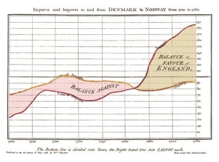

My First Blog
from IPython.core.display import HTML
import pandas as pd
import numpy as np
import matplotlib.pyplot as plt
from IPython.display import Image
from IPython.core.display import HTML
from PIL import Image, ImageOps
import numpy as np
import seaborn as sns
%matplotlib inline
This is an image
mytext1 = ('\n Little of History :\n')
mytext2 = ('\n How did statistic come to existence?\n')
mytext3 = ('\n The word statistics comes from the modern Latin phrase statisticum collegium (lecture about state affairs), which gave rise to the Italian word statista (statesman or politician — compare to status) and the German Statistik (originally the analysis of data about the state.')
print(mytext1+mytext2+mytext3)
Little of History :
How did statistic come to existence?
The word statistics comes from the modern Latin phrase statisticum collegium (lecture about state affairs), which gave rise to the Italian word statista (statesman or politician — compare to status) and the German Statistik (originally the analysis of data about the state
When, who and how invented first Graphs ?
Accordingly to Wikipedia, William Playfair (22 September 1759 – 11 February 1823) a Scottish engineer and political economist, served as a secret agent on behalf of Great Britain during its war with France. The founder of graphical methods of statistics, Playfair invented several types of diagrams: in 1786 the line, area and bar chart of economic data, and in 1801 the pie chart and circle graph, used to show part-whole relations.

Playfair, who argued that charts communicated better than tables of data, has been credited with inventing the line, bar, area, and pie charts. His time-series plots are still presented as models of clarity. Playfair first published The Commercial and Political Atlas in London in 1786. It contained 43 time-series plots and one bar chart, a form apparently introduced in this work. It has been described[by whom?] as the first major work to contain statistical graphs. Playfair's Statistical Breviary, published in London in 1801, contains what is generally credited as the first pie chart.